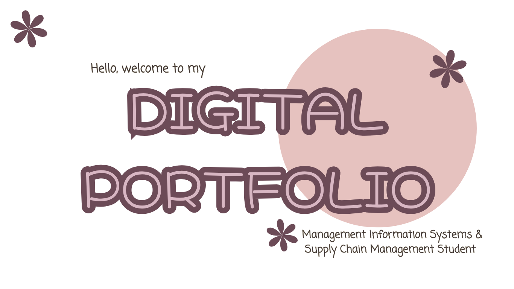
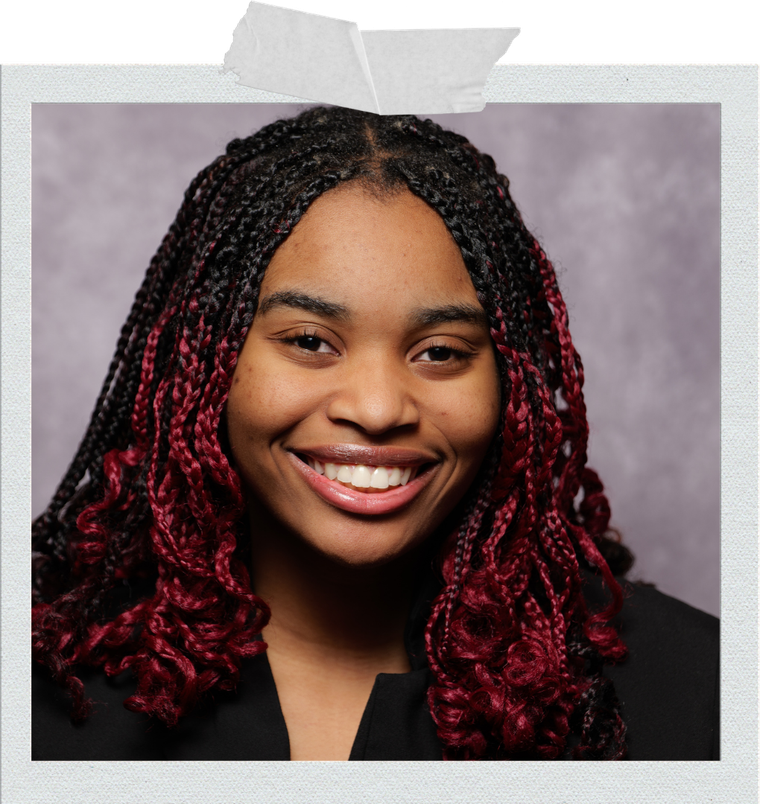
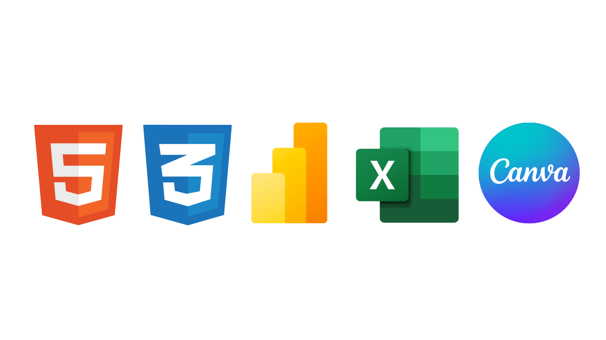

Education
B.S. in Management Information Systems & Supply Chain Management
Rutgers Business School – Newark
Relevant coursework: Database Management, System Analysis & Design, Data Warehousing, Business Research Methods
2023 – Expected May 2027

I am a student at Rutgers Business School with an interest in operations management, project management, and information systems. I enjoy combining creativity with organization through event planning, technology, and design. Through leadership roles and hands-on projects, I have developed skills in teamwork, communication, and problem-solving. I am currently building my experience in business operations, web design, and data-driven projects while continuing to grow my technical and professional skills. I enjoy learning new tools and finding ways to make projects more efficient, organized, and visually engaging. My goal is to build a career where I can combine creativity, technology, and leadership to create meaningful experiences and solutions.

Rutgers Business School – Newark
Relevant coursework: Database Management, System Analysis & Design, Data Warehousing, Business Research Methods
2023 – Expected May 2027
Operations Crew Member
Rutgers University–Newark, Reservations & Special Events
Business Development
Next Play (Remote)
Vice President
Rutgers Undergraduate Women in Business
Vice President of Member Relations
Rutgers Undergraduate Women in Business
Graphics & IT Committee Member
Rutgers Undergraduate Women in Business
Individual class project, Jan – April 2026
Individual class project, Sept – Dec 2023
